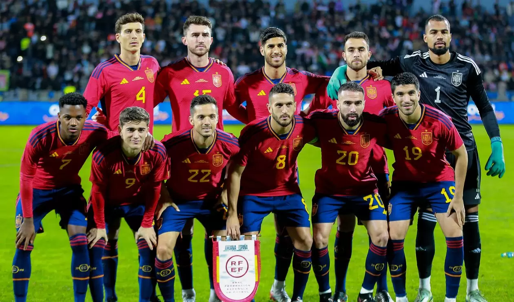

BANDERA |
NOMBRE |
PUNTOS |
 |
ESPAÑA |
1836 |
España es reconocida como uno de los países con el mejor fútbol del mundo debido a su estilo de juego único, su rica historia de logros internacionales y la calidad de sus jugadores. En el ámbito internacional, el hito más importante en la historia del fútbol español fue su victoria en la Copa del Mundo de 2010, un momento histórico para el país que consagró a una generación dorada de futbolistas liderados por figuras como Andrés Iniesta, Xavi Hernández, Iker Casillas y Sergio Ramos. Este equipo, conocido por su estilo de juego basado en la posesión y el "tiki-taka", revolucionó el fútbol con su precisión en el toque y su control del balón, marcando una era de dominio tanto en Europa como en el mundo. Además de la Copa del Mundo, España ganó consecutivamente las Eurocopas de 2008 y 2012, convirtiéndose en la primera selección en la historia en ganar tres torneos internacionales de manera consecutiva, lo que consolidó su estatus como una de las potencias más grandes del fútbol. El éxito de España se basa en gran parte en la calidad de sus clubes y la excelente formación de jugadores. La liga española, La Liga, es una de las más prestigiosas y competitivas del mundo, albergando a clubes legendarios como el Real Madrid y el FC Barcelona, dos equipos que han dominado el panorama futbolístico europeo durante décadas. Estos clubes no solo han ganado múltiples títulos de la UEFA Champions League, sino que también han sido cuna de algunos de los mejores jugadores del mundo, tanto nacionales como internacionales. El Real Madrid, por ejemplo, ha ganado 14 Champions League, más que cualquier otro club en la historia, mientras que el FC Barcelona ha sido el hogar de grandes estrellas como Lionel Messi, quien ha dejado una huella imborrable en el fútbol mundial.
